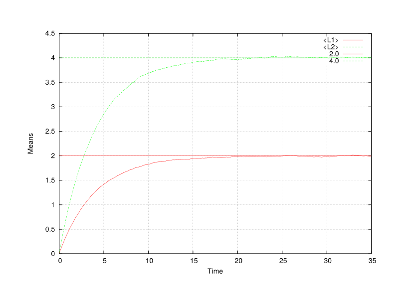
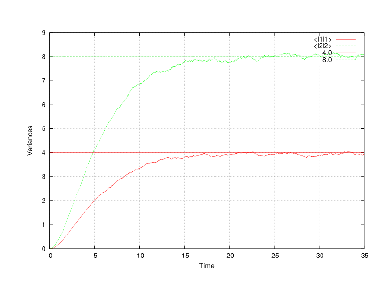
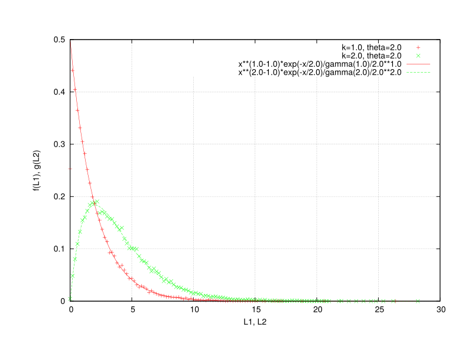
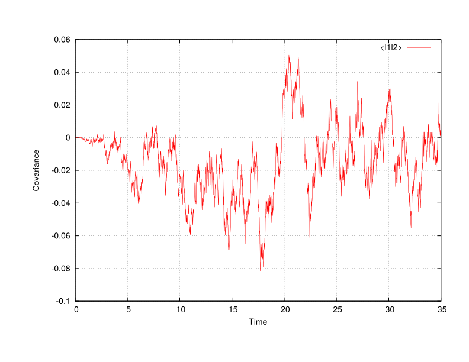

Walker: Integrating the gamma SDE
This example runs Walker to integrate the gamma SDE (see DiffEq/Gamma.h) using constant coefficients.
Control file
title "Example problem" walker term 35.0 # Max time dt 0.01 # Time step size npar 100000 # Number of particles ttyi 100 # TTY output interval rngs mkl_r250 seed 1 end end gamma depvar l init zero coeff const ncomp 2 # k = bS/kappa, 1/theta = b(1-S)/kappa # <Y> = S/(1-S), <y^2> = kappa/b * <Y>/(1-S) b 1.5 2.5 end kappa 1.0 1.0 end S 0.666666666666 0.8 end rng mkl_r250 end statistics <l1l1> <l2l2> <l1l2> end pdfs interval 100 filetype txt policy overwrite centering node format scientific precision 4 f( L1 : 2.0e-1 ) g( L2 : 2.0e-1 ) end end
Example run on 8 CPUs
./charmrun +p8 Main/walker -v -c ../../tmp/gamma.q
Output
Running on 8 processors: Main/walker -v -c ../../tmp/gamma.q
charmrun> /usr/bin/setarch x86_64 -R mpirun -np 8 Main/walker -v -c ../../tmp/gamma.q
Charm++> Running on MPI version: 3.0
Charm++> level of thread support used: MPI_THREAD_SINGLE (desired: MPI_THREAD_SINGLE)
Charm++> Running in non-SMP mode: numPes 8
Converse/Charm++ Commit ID: e19f0a7
CharmLB> Load balancer assumes all CPUs are same.
Charm++> Running on 1 unique compute nodes (8-way SMP).
Charm++> cpu topology info is gathered in 0.003 seconds.
,::,` `.
.;;;'';;;: ;;#
;;;@+ +;;; ;;;;;, ;;;;. ;;;;;, ;;;; ;;;; `;;;;;;: ;;;
:;;@` :;;' .;;;@, ,;@, ,;;;@: .;;;' .;+;. ;;;@#:';;; ;;;;'
;;;# ;;;: ;;;' ;: ;;;' ;;;;; ;# ;;;@ ;;; ;+;;'
.;;+ ;;;# ;;;' ;: ;;;' ;#;;;` ;# ;;@ `;;+ .;#;;;.
;;;# :;;' ;;;' ;: ;;;' ;# ;;; ;# ;;;@ ;;; ;# ;;;+
;;;# .;;; ;;;' ;: ;;;' ;# ,;;; ;# ;;;# ;;;: ;@ ;;;
;;;# .;;' ;;;' ;: ;;;' ;# ;;;; ;# ;;;' ;;;+ ;', ;;;@
;;;+ ,;;+ ;;;' ;: ;;;' ;# ;;;' ;# ;;;' ;;;' ;':::;;;;
`;;; ;;;@ ;;;' ;: ;;;' ;# ;;;';# ;;;@ ;;;:,;+++++;;;'
;;;; ;;;@ ;;;# .;. ;;;' ;# ;;;;# `;;+ ;;# ;# ;;;'
.;;; :;;@ ,;;+ ;+ ;;;' ;# ;;;# ;;; ;;;@ ;@ ;;;.
';;; ;;;@, ;;;;``.;;@ ;;;' ;+ .;;# ;;; :;;@ ;;; ;;;+
:;;;;;;;+@` ';;;;;'@ ;;;;;, ;;;; ;;+ +;;;;;;#@ ;;;;. .;;;;;;
.;;#@' `#@@@: ;::::; ;:::: ;@ '@@@+ ;:::; ;::::::
:;;;;;;. __ __ .__ __
.;@+@';;;;;;' / \ / \_____ | | | | __ ___________
` '#''@` \ \/\/ /\__ \ | | | |/ // __ \_ __ \
\ / / __ \| |_| <\ ___/| | \/
\__/\ / (____ /____/__|_ \\___ >__|
\/ \/ \/ \/
< ENVIRONMENT >
------ o ------
* Build environment:
--------------------
Hostname : karman
Executable : walker
Version : 0.1
Release : LA-CC-XX-XXX
Revision : 595988fa7c6097b7cafd95eee9ec082dd5fb28c4
CMake build type : DEBUG
Asserts : on (turn off: CMAKE_BUILD_TYPE=RELEASE)
Exception trace : on (turn off: CMAKE_BUILD_TYPE=RELEASE)
MPI C++ wrapper : /opt/openmpi/1.8/clang/system/bin/mpicxx
Underlying C++ compiler : /usr/bin/clang++-3.5
Build date : Tue Feb 17 10:46:25 MST 2015
* Run-time environment:
-----------------------
Date, time : Tue Feb 17 11:39:06 2015
Work directory : /home/jbakosi/code/quinoa/build/clang
Executable (rel. to work dir) : Main/walker
Command line arguments : '-v -c ../../tmp/gamma.q'
Output : verbose (quiet: omit -v)
Control file : ../../tmp/gamma.q
Parsed control file : success
< FACTORY >
---- o ----
* Particle properties data layout policy (CMake: LAYOUT):
---------------------------------------------------------
particle-major
* Registered differential equations:
------------------------------------
Unique equation types : 9
With all policy combinations : 22
Legend: equation name : supported policies
Policy codes:
* i: initialization policy: R-raw, Z-zero
* c: coefficients policy: C-const, J-jrrj
Beta : i:RZ, c:CJ
Diagonal Ornstein-Uhlenbeck : i:RZ, c:C
Dirichlet : i:RZ, c:C
Functional beta : i:RZ, c:CJ
Gamma : i:RZ, c:C
Generalized Dirichlet : i:RZ, c:C
Ornstein-Uhlenbeck : i:RZ, c:C
Skew-Normal : i:RZ, c:C
Wright-Fisher : i:RZ, c:C
< PROBLEM >
---- o ----
* Title: Example problem
------------------------
* Differential equations integrated (1):
----------------------------------------
< Gamma >
kind : stochastic
dependent variable : l
initialization policy : Z
coefficients policy : C
start offset in particle array : 0
number of components : 2
random number generator : MKL R250
coeff b [2] : { 1.5 2.5 }
coeff S [2] : { 0.666667 0.8 }
coeff kappa [2] : { 1 1 }
* Output filenames:
-------------------
Statistics : stat.txt
PDF : pdf
* Discretization parameters:
----------------------------
Number of time steps : 18446744073709551615
Terminate time : 35
Initial time step size : 0.01
* Output intervals:
-------------------
TTY : 100
Statistics : 1
PDF : 100
* Statistical moments and distributions:
----------------------------------------
Estimated statistical moments : <L1> <L2> <l1l1> <l1l2> <l2l2>
PDFs : f(L1:0.2) g(L2:0.2)
PDF output file type : txt
PDF output file policy : overwrite
PDF output file centering : node
Text floating-point format : scientific
Text precision in digits : 4
* Load distribution:
--------------------
Virtualization [0.0...1.0] : 0
Load (number of particles) : 100000
Number of processing elements : 8
Number of work units : 8 (7*12500+12500)
* Time integration: Differential equations testbed
--------------------------------------------------
Legend: it - iteration count
t - time
dt - time step size
ETE - estimated time elapsed (h:m:s)
ETA - estimated time for accomplishment (h:m:s)
out - output-saved flags (S: statistics, P: PDFs)
it t dt ETE ETA out
---------------------------------------------------------------
100 1.000000e+00 1.000000e-02 000:00:02 000:01:40 SP
200 2.000000e+00 1.000000e-02 000:00:05 000:01:35 SP
300 3.000000e+00 1.000000e-02 000:00:08 000:01:32 SP
400 4.000000e+00 1.000000e-02 000:00:11 000:01:30 SP
500 5.000000e+00 1.000000e-02 000:00:14 000:01:27 SP
600 6.000000e+00 1.000000e-02 000:00:17 000:01:24 SP
700 7.000000e+00 1.000000e-02 000:00:20 000:01:21 SP
800 8.000000e+00 1.000000e-02 000:00:23 000:01:18 SP
900 9.000000e+00 1.000000e-02 000:00:26 000:01:15 SP
1000 1.000000e+01 1.000000e-02 000:00:28 000:01:12 SP
1100 1.100000e+01 1.000000e-02 000:00:31 000:01:09 SP
1200 1.200000e+01 1.000000e-02 000:00:34 000:01:06 SP
1300 1.300000e+01 1.000000e-02 000:00:37 000:01:03 SP
1400 1.400000e+01 1.000000e-02 000:00:40 000:01:00 SP
1500 1.500000e+01 1.000000e-02 000:00:43 000:00:57 SP
1600 1.600000e+01 1.000000e-02 000:00:45 000:00:54 SP
1700 1.700000e+01 1.000000e-02 000:00:48 000:00:51 SP
1800 1.800000e+01 1.000000e-02 000:00:51 000:00:48 SP
1900 1.900000e+01 1.000000e-02 000:00:54 000:00:45 SP
2000 2.000000e+01 1.000000e-02 000:00:57 000:00:43 SP
2100 2.100000e+01 1.000000e-02 000:01:00 000:00:40 SP
2200 2.200000e+01 1.000000e-02 000:01:03 000:00:37 SP
2300 2.300000e+01 1.000000e-02 000:01:06 000:00:34 SP
2400 2.400000e+01 1.000000e-02 000:01:08 000:00:31 SP
2500 2.500000e+01 1.000000e-02 000:01:11 000:00:28 SP
2600 2.600000e+01 1.000000e-02 000:01:14 000:00:25 SP
2700 2.700000e+01 1.000000e-02 000:01:17 000:00:22 SP
2800 2.800000e+01 1.000000e-02 000:01:20 000:00:20 SP
2900 2.900000e+01 1.000000e-02 000:01:23 000:00:17 SP
3000 3.000000e+01 1.000000e-02 000:01:26 000:00:14 SP
3100 3.100000e+01 1.000000e-02 000:01:28 000:00:11 SP
3200 3.200000e+01 1.000000e-02 000:01:31 000:00:08 SP
3300 3.300000e+01 1.000000e-02 000:01:34 000:00:05 SP
3400 3.400000e+01 1.000000e-02 000:01:37 000:00:02 SP
3500 3.500000e+01 1.000000e-02 000:01:40 000:00:00 SP
Normal finish, maximum time reached: 35.000000
* Timers (h:m:s):
-----------------
Initial conditions : 0:0:0
Migration of global-scope data : 0:0:0
Total runtime : 0:1:40
[Partition 0][Node 0] End of program
Results
The left figure shows the time evolution of the means estimated from the numerical simulation together with those of the invariant distributions. The right figure shows the time evolution of the variances and those of the invariant. Both plots indicate convergence to the correct statistically stationary state.


Gnuplot commands to reproduce the above plots:
plot "stat.txt" u 2:3 w l t "<L1>", "stat.txt" u 2:4 w l t "<L2>", 2.0 lt 1, 4.0 lt 2 plot "stat.txt" u 2:5 w l t "<l1l1>", "stat.txt" u 2:7 w l t "<l2l2>", 4.0 lt 1, 8.0 lt 2
The left figure shows the 2 estimated PDFs at the final step of the simulation together with the corresponding invariants. The right figure shows the time evolution of the estimated covariance indicating no correlations at all times corresponding to the statistically independent equations integrated.


Gnuplot commands to reproduce the above plots:
plot "pdf_f.txt" t "k=1.0, theta=2.0", "pdf_g.txt" t "k=2.0, theta=2.0", x**(1.0-1.0)*exp(-x/2.0)/gamma(1.0)/2.0**1.0 lt 1, x**(2.0-1.0)*exp(-x/2.0)/gamma(2.0)/2.0**2.0 lt 2 plot "stat.txt" u 2:6 w l t "<l1l2>"